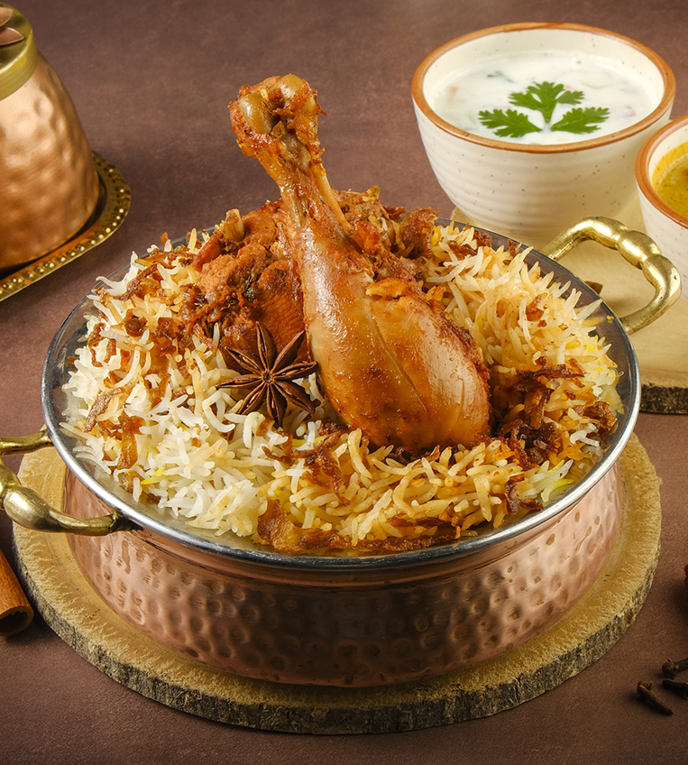

Biriyani Recipe

Description
Mutton biryani holds a regal legacy from the kitchen of Nawabs and Nizams, differing slightly from region to region in India. This indulgent recipe is a true example of Lucknowi Awadhi culinary heritage.
Ingredients
- 2 cups basmati rice
- 500g chicken or mutton
- 1 cup yogurt
- 2 onions (sliced)
- 1 tbsp ginger-garlic paste
- 1 tsp red chili powder
- 1 tsp turmeric
- 1 tsp garam masala
- Handful of mint and coriander leaves
- 1 lemon
- 2 tbsp milk + pinch of saffron (optional)
- 3 tbsp oil or ghee
- Salt to taste
Steps to Make Biryani
- Soak rice for 30 minutes.
- Marinate meat with yogurt and spices.
- Fry onions until golden brown; set half aside.
- Cook the marinated meat until tender.
- Boil rice until 80% cooked and drain.
- Layer meat, rice, fried onions, herbs, and saffron milk in a pot.
- Cover and steam (dum) on low heat for 20 minutes.
- Gently mix before serving and enjoy hot.
Home